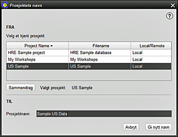

Dette PROJEKT-menyalternativet lar deg endre navn på et eksisterende HRE-prosjekt, og beholde databasen på sin eksisterende plassering. 1. Marker prosjektet du vil gi nytt navn. I dette eksemplet heter prosjektet "Immigrants". Bare prosjekter du tidligere har fått tilgang til kan omdøpes 2. Merk at du ikke kan gi nytt navn til et for øyeblikket åpent prosjekt (en popup-melding vises) - det må lukkes først 3. For kontrollformål kan en SAMMENDRAG av det valgte prosjektet vises før du fortsetter 4. Skriv inn det nye navnet på dette prosjektet i den tildelte plassen. Mellomrom, tall, store og små bokstaver og vanlige filnavntegn er tillatt. Det nye navnet må være et unikt prosjektnavn, uavhengig av plasseringen 5. Klikk for å GJENNAVNE prosjektet eller AVBRYT for ikke å fortsette 6. Prosjektet er nå omdøpt til "New Immigrants" i dette eksemplet, og prosjektlisten vil da bli oppdatert 7. Prosjektets omdøpingsprosess er kun for brukertilgang og identifikasjonsformål, da Filnavn ("Immigrants_to_AUS" i dette tilfellet) forblir uendret på datamaskinen. |
|
Relaterte Temaer |